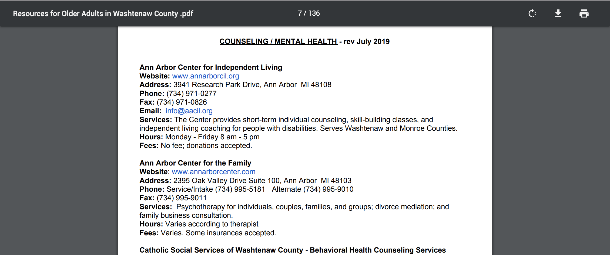
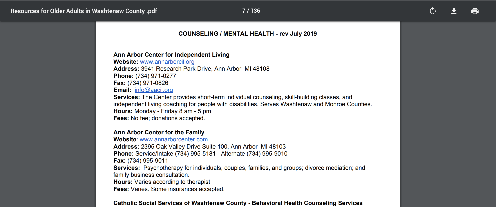

Designing for the Elderly
UX Research at Michigan Medicine in Ann Arbor MI, Sept - Dec 2018
Our client organization was the Turner Senior Wellness Program, a community outreach program funded by the University of Michigan Medicine Geriatrics Center and Institute of Gerontology. Turner Senior Wellness is a community focused, free if not low cost, program geared towards enhancing the life of senior residents of Washtenaw County
The Turner Senior Wellness Program has a 120-page PDF document that lists the known local resources for older adults in Washtenaw county. Their PDF resource guide contains a list of descriptions of various services meant to alleviate the life of seniors. While the information listed on the PDF is in fact useful, text document searches are greatly unorganized since most of the organization is in the form of unstructured text. The clients are requesting help with designing a more user friendly way to share their resources.
 

Interview Protocol
My group and I conducted five contextual inquiry interviews with three different key stakeholders: not tech-savy potential senior users of the resource guide, more tech-savy (part of the technology mentor program at Turner Center) potential senior users of the resource guide, & the pdf resource guide editor. I was responsible for interviewing the less likely to be not tech-savy senior users. Here is a snippet of the type of questions asked:
Interpretation Sessions
After the five interviews, we held interpretation sessions to extract individual pieces of data called "affinity notes" from our five interviews. I was responsible for interpreting my interview with the not technologically savy senior user. Below are twenty of the most insightful affinity notes I collected from the interviews:
Affinity Wall Construction
Together with all of the 250+ affinity notes we collected from our interviews during the interpretation sessions, we constructed an affinity wall. We clustered the affinity notes with related content and created meta clusters, meta meta clusters, etc. Through this activity, we were able to find relevant patterns across the notes that were being summarized. It was important to make sure that there was a good balance between generalization and precision. More importantly, the summaries of the cluster of affinity notes needed to be broad enough that it captured all of the affinity notes the summaries represented but they needed to be specific enough to be meaningful.
Problem Areas of the Resource Guide
From the interviews we found various areas of the resource guide which can be improved.
- 1. Senior users are unfamiliar with the hovering method. They are unable to realize that there are printing options at the top if you move the cursor.
- 2. Senior users like the categorization of the resources on the guide but visually it is hard to differentiate for them.
- 3. Seniors still run into problems related to search despite the instructions for the control + F feature.
- 4. The unfamiliarity with the hovering method also makes seniors unaware of the scroll bar on the right and they use the physical scrolling method on the mouse to go navigate through the 120 page resource guide.
Potrntial Redesign
We proposed a redesign of the 104 page PDF document. While the ideal solution might seem like a website, through contextual inquiry, we learned that senior already have a vague understanding of logistics regarding computers, browsers, and the Internet, so introducing a website can potentially confuse them more. Additionally, there is a financial limitation that might maker the transition to a website not feasible.
Separation of Information
During our interview, we asked a user who never interacted with the PDF to look for a specific resource on the guide. When they got to the first page we noticed, they ignored the critical control + F search feature because once they immediately saw links of categories, they began to click away. Because of this, we believe it will be best to separate the overwhelming and busy first page into three different pages: the title page, instructions page, and another page with an index that includes improved graphics for better readability.
Instruction Page
The instructions page will include instructions about the control + F feature, how hyperlinks work, and the hovering feature which exposes the toolbar and scrolling bar.
Bookmark
PDFS allow for a bookmark option at the top of their toolbars but the current resource guide does not have one. This makes it difficult for users to navigate through the resource guide, especially when they are searching for more than one agency. For example, if a user finds his information on the last page of the 120 page document, they will have to manually scroll through all 120 pages since many are unaware of the invisible scrolling bar on the right of ur browser. Therefore, we wanted to include links at top of each page that will direct users to either go to the top of the section they are currently in or go back all the way to the index on the third page..
Additional Hyperlinks
If the senior users still ignore the instructions for the hovering feature and have a hard time understanding the hovering method for accessing the toolbars, at the beginning of each page, there will be hyperlinks to go back to the index and go back to the top of each section.